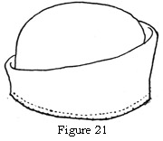
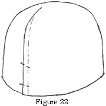
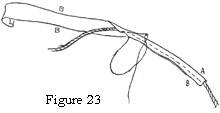
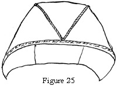
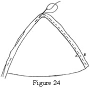

1925—Millinery
by Jane Loewen
CHAPTER IV —CROWNS
I. FRAME FOUNDATIONS USED FOR CROWNS
PRESSED CROWNS
A pressed crown is the simplest foundation to use for a crown because it may be purchased ready for use. When a soft crown is desired, the top of the crown may be cut out with a razor blade after the hat is completed but before the hat is lined.
1. Desirable kinds of pressed crowns. A soft pressed crown (one made of elastic net, crinoline, or very lightweight jockey buckram) is always the most satisfactory, both from the point of view of comfort and of appearance.
Plain oval. A plain oval crown is the best foundation for most cap and section crowns.
Cuff crowns. An oval pressed crown with plain or draped separate cuff around the side crown may be used for mounting a cap crown (see section II, of this chapter), and for mounting a fitted cap with a draped side (see section II, of this chapter).
Shaped oval crowns. Shaped oval crowns—for example, one that is larger at the top and higher on the left side—often make good frames (or molds) over which to sew braid crowns. (See Chapter VIII, section II.)
SIDE CROWN FOUNDATIONS
A bias strip of elastic net or willow may be cut to fit the brim headsize; the width of this band varies from 2 to 4 inches according to the kind of crown. Start with 4 inches and cut it lower if desired. Stretch the bias frame material so that the headsize is larger around than the top of the band. After it is shaped trim the headsize edge and wire and bind it. Cut the top edge so that it slants down in a lower curve on the right side. Bind it as for a frame edge.
Figure 21. Pressed Crown with Cuff Side Crown.
II. KINDS OF CROWNS
CAP CROWNS
A cap crown is a soft crown made with an oval or round top and a bias side.
1. Plain oval-top crowns. The most commonly used cap crown has an oval top and a bias side which measures from 5 to 8 inches. The variation of width depends on the amount of drape desired in the side crown.
The oval top may be used in two ways.
Long from front to back. The plain oval-top crown may be placed so that it is long from front to back, with the folds draped a little deeper on the right side.
Wide from side to side. The plain oval-top crown may be used so that its length is from side to side. The folds of the drape are then deeper at the sides, because the oval brings the side crown down lower at the sides, so that the crown stands higher in front and back than at the sides. The cap may be pushed back on the pressed crown so that the front is much higher than the back. This draping of a cap crown is becoming to a woman with a wide face oval (see section III of this chapter).
2. Small oval-side crown shirred on cord. This is often used on a hat for a girl who has a small face. The top crown is so small that it is not much more than a tip. It varies in size from an oval of 4½ by 3 inches to an oval of 3 by 2¼ inches.
3. Round top crown. Occasionally a round top, a perfect circle, is used for a cap crown, usually in a semidraped soft hat.
4. Method of mounting. Since a cap crown should always be soft in appearance it is usually mounted on a soft pressed crown or a bias side band of elastic net.
5. Seam placement. The seam in the side of a cap crown should always be placed where it shows least.
In an even drape place the bias seam so that it starts at the center back and runs toward the right side. It will be less conspicuous on the right side. The hat is worn tilted down on the right side. Any trimming is usually on the right side.
In an uneven drape the seam should always be placed where the side crown is lowest and the seam shows least.
When there is a side-crown trimming, the seam of the bias side may be placed so that the trimming covers it.
PLAIN SECTIONAL
Plain sectional crowns are semifitted soft crowns made of a number of pie- or wedge-shaped sections.
1. Kinds of sectional crowns. The various kinds of sectional crowns are: two-section crowns, four-section crowns, six-section crowns, eight-section crowns.
2. Method of assembling sectional crowns. (Exact directions are always given on each section-crown pattern.)
Plain sectional crowns. The method is always to baste from the center top down to the headsize before stitching. If the material used is very soft or very lightweight, an interlining is used. Care is needed to keep the seam smooth but not stretched.
Corded sectional crown—an unfinished bias cord is used to outline the sections (see Figure 23).
Figure 23. An Unfinished Cord.
For an even number of sections—there are two methods of cording (see figures 24 and 25).
Figure 24. Cording a Sectional Crown.
Figure 25. Making One Straight Cord from Front to Back in a Six-Sectional Crown.
Cording half the sections is a method used when only half the sections are outlined with cord from the headsize to the center and down to the headsize again.
They are then assembled with a plain section alternating with a corded one. This makes one cord on each seam and each cord pointed in a V at the center top crown.
Making a straight cord from front to back—in this method one length of cord is run from front to back of the crown. One section is sewn on each side of this cord with the central points meeting. Any extra sections are then outlined with cord (from headsize to center and from the top to the headsize) and set in.
In case of a four-section crown only one extra cord on each side is set in from headsize to center top.
For an uneven number of sections, the best method is to outline one side of each section with cord and let all cord ends meet at the center top. The ends are hidden on the seam side. It will be seen that a fine soft cord is essential.
SECTIONAL CAP CROWN WITH DRAPED SIDE CROWN
The top of the crown is made of pie-shaped sections which form a circle or an oval.
1. Assembling. In this type of crown the top crown is assembled with or without cords as for a plain sectional crown.
2. Mounting the top crown. The circle edge of the section cap thus formed is shirred and the cap is mounted on a pressed crown, the fullness evenly distributed, and the cap sewn to the pressed crown.
3. Draping the side crown. The side crown is a bias strip fitted loosely and joined in a seam.
Seam placement. The seam is placed as for a cap crown (see section II, 5, of this chapter).
Draping. The side crown is draped in folds around the head-size. The width varies from 4 to 6 inches according to the fullness desired.
Finish. Top Edge. The top edge may be finished in two ways:
a. Fold finish. The edge may be turned in a fold and the fold slip-stitched to the cap.
b. Wire finish. The top edge may be turned over a wire, or corded and finished as for a flange edge (see Chapter VII, section II, under Fitted Hats).
Lower or Headsize Edge. The lower or headsize edge may be finished in any one of three ways:
a. Inside-the-crown finish. The edge may be turned up inside the crown and whip-stitched to the frame. This gives a fold finish.
b. Brim-fold finish. The headsize edge of the pressed crown may be sewn to the finished brim of the hat and the lower head-size edge of the side-crown drape pulled down over the crown headsize and slip-stitched to the brim.
c. Crown-wire finish. The headsize edge of the pressed crown may be bound with hat material and the bias side-crown drape . may be worked over a wire and finished in the same way as the top edge is finished (see section II of this chapter).
Tam crowns are larger than other crowns and are always soft and loose. The drape should be adjusted after the hat is complete so that the lines are becoming to the type of individual.
They are all cut by patterns where seam placement and mounting directions are given.
1. Fitted or circular crowns are crowns with round or oval tops and a side crown which is cut from a segment of a large circle edge.
2. Sectional tams are larger but are treated much the same as plain sectional crowns. The shapes are different in outline because the extra flare is fitted into the same headsize as any other crown. The assembling of the sections is just the same (see section II of this chapter). See Figure 33.
Six-section.
Four-section.
Eight-section.
Five-section.
3. Saddle tams. Saddle tams are shaped with a long fitted strip running from side to side and with circular-shaped sections at front and back. See Figure 35.
Directions for assembling are always given in the patterns.
4. Round tam with bias side. In making this kind of tam the bias is held a little full to give extra flare, but never enough to make shirrings at the top-crown seam.
FITTED CROWNS
Fitted crowns differ from other kinds in that the different pieces are fitted and sewn separately to the pressed crown.
1. Fitted or pressed crowns. A top piece is fitted and sewn or pasted onto the top of a pressed crown, and a plain bias side crown fitted and finished with a fold or a wire finish (see section II of this chapter).
2. Draped side crown. This variety is the same as 1, but has a wider bias side. The extra width is draped in folds around the side crown. Many of the pressed crowns now on the market have plain or folded cuff sides over which the draped side crown may be folded.
Place the bias side-crown seam where it will show least.
3. Fitted top crowns. Fitted top crowns may have a bias side crown which is corded in groups of three or more or which is corded at regular spaces.
4. Sectional crowns fitted on pressed crowns. A sectional crown (see section II of this lesson) may be assembled and fitted over a pressed crown.
SOFT SEMIFITTED CROWNS
1. Draped. Under this heading come the crowns that are draped with the extra fullness cut out. Folds are laid to match on the cut edges and an unfinished cord set in.
2. Sectional. A bias piece is fitted around a pressed crown. The lower edge is finished plain or draped in a fold. The top edge is cut in pie with a section pattern and the seams stitched plain or corded.
III. OUTLINE OF KINDS OF CROWNS AND THEIR APPROPRIATE BRIMS
| Oval cap crown, long from front to back Chapter IV, sec. II. |
Oval cap crown, wide from side to side Chapter IV, sec. II. |
2-Section crowns Chapter IV, sec. II |
4-, 6-, and 8-section crowns Chapter IV, sec. 11 |
Circular tam crowns Chapter IV, sec. II |
Sectional tam crowns Chapter IV, sec. II |
Saddle-tam crowns Chapter IV, sec. 11 |
Fitted crowns Chapter IV, sec. 11 |
Sectional fitted crowns Chapter IV, sec. 11 |
Soft fitted crowns Chapter IV, sec. 11 |
|
| Medium large Sailor Brim | * | * | * | * | * | |||||
| Small Sailor Brim | * | * | * | * | * | |||||
| Large Mushroom Brim | * | * | * | * | * | |||||
| Medium Mushroom Brim | * | * | * | * | * | |||||
| Small Mushroom Brim | * | * | * | * | * | * | * | * | ||
| Large Poke Brim | * | * | * | |||||||
| Medium Poke Brim | * | * | * | * | * | |||||
| Small Poke Wide from Side to Side | * | * | * | |||||||
| Small Poke Long Front | * | * | * | * | * | |||||
| Medium-large Tricorn Brim | * | * | * | |||||||
| Small Tricorn Brim | * | * | * | |||||||
| Large Irregular Brim | * | * | * | * | * | |||||
| Small Irregular Brim | * | * | * | |||||||
| Medium-large Rolled Brim | * | * | * | * | * | |||||
| Small Rolled Brim | * | * | * | * | * |
IV. HOW TO DETERMINE KINDS OF CROWNS SUITABLE TO INDIVIDUAL TYPES OF FACES
WHAT DECIDES THE KIND OF CROWN TO BE WORN
The contour of the face—the proportion of the face oval—always determines the kind of crown suitable to the individual. The crown of the hat makes the complemental (top half) of the oval.
RULES FOR CHOOSING CROWNS
1. For the wide face oval. The crown must never be narrower than the face at its widest point. A narrower crown makes a wide face seem wider in proportion.
Wide, soft crowns are most becoming to wide faces. Four-section tams, round tams, saddle crowns, or cap crowns wide from side to side are good types.
2. For the narrower face. The fitted crown must never be wider than the face oval at its widest point. A crown too wide overshadows a narrow face until the face seems even smaller.
A soft drape may be used without spoiling the proportion.
A soft, not too-wide crown is best for a narrow face, as cap crowns and soft six- and eight-section crowns.
3. For the long, thin face. The long, thin face must have a comparatively low, not too wide, crown. A very high or stiff crown must never be chosen. It adds and exaggerates length.
A very flat crown is out of proportion and makes for exaggeration.
Soft crowns of medium height and width complement the long, thin face. Soft cap crowns, long from front to back, section cap crowns, and circle cap crowns are very good for this type.
4. For the short face oval. The short face oval must avoid extremely high crowns and extremely wide crowns. A very high crown makes the face seem shorter by contrast. A very wide crown looks heavy and adds to the apparent width of the face.
Medium-high crowns with soft, irregular width are best for this class, as soft crowns wide from side to side and two-section crowns.
QUESTIONS
- Define a cap crown, a section crown, a tam crown, a sectional cap crown.
- What is the important point in seam placement?
- Give two ways of assembling a corded sectional crown which has an even number of sections.
- What principle decides the kind of crown to be worn by any individual?
- Name the kinds of crowns becoming to four distinct types of individuals.
- Make five different kinds of crowns, doll-size.
- Give two kinds of crowns that may be used with each of five distinct types of hats as given in the Outline, section IV.